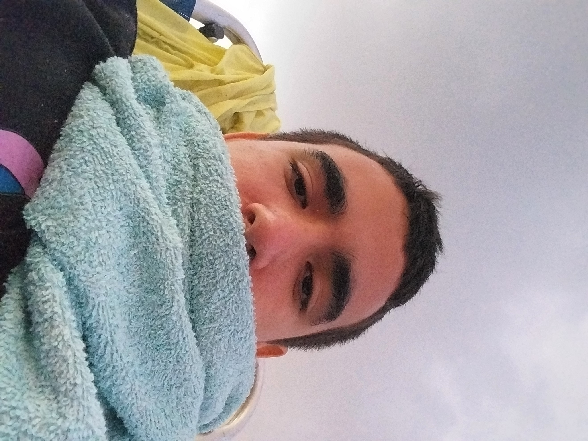

Mobile Legends: Bang Bang, mais conhecido como LOL, é um jogo eletrônico de gênero multiplayer online desenvolvido e publicado pela Moonton. O jogo foi lançado inicialmente para dispositivos móveis em 2016 e rapidamente ganhou popularidade em várias regiões do mundo, especialmente no Sudeste Asiático, América Latina e Brasil.
Equipe
O jogo é composto por equipes de cinco jogadores de cada lado. Temos a equipe Azul e a equipe Vermelha, com o objetivo de destruir a torre inimiga. Para isso, os jogadores devem trabalhar em conjunto cada um em sua rota correspondente. Ao todo temos 5 rotas, Mid, XP, jungle, Adc e Rotação.
Amigos
Ter amigos para jogar LOL é essencial para uma boa experiência no jogo. Com isso um grupo de 3 amigos se juntaram para formar um time de LOL, entretanto a vida não é um mar de rosas, e com isso apresento-lhes os integrantes do time
Henrique o melhor
Henrique o melhor, como já diz o nome é o melhor do time. Ele faz sua função de suporte e é o mais experiente do time.

Titele / Jian
Jian pode se dizer que é o segundo melhor do time, extremamente viciado em jogar e indeciso em qual rota escolher. Mas normalmente escolhe jungle onde é levemente habilidoso.
Arthur lenda 4 (o pior)
Arthur lenda 4 o pior, como já diz o nome é o pior do time. Sempre joga errado, não tem noção de jogo e não sabe fazer sua função de ADC. Não sabe direito se ele é um lixo de ADC ou falta de tempo para treinar.